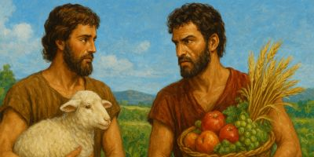
Children of Adam and Eve
“When you let go of anger, your heart becomes a place where God can dwell.” Anger is like a storm that clouds the soul. It blocks the light of love, peace, and understanding. When we hold on to anger, we build walls around our hearts — but when we release it, God’s presence fills the empty space with peace.
Cain And Abel
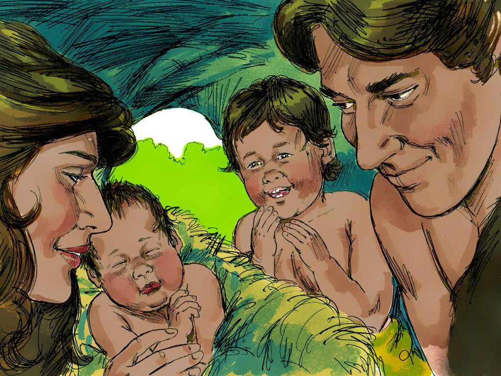
Children of Adam and Eve
ஆதாம் – ஏவாளுக்கு பிறந்த குழந்தைகள்
After leaving the Garden of Eden, Adam and Eve began their family life. Some time later, Eve gave birth to a son and named him Cain. She said, "With the Lord's help, I have brought forth a man." Later, Eve gave birth to another son, and they named him Abel.
ஏதேன் தோட்டத்திலிருந்து வெளியேறிய பிறகு, ஆதாமும் ஏவாளும் குடும்ப வாழ்க்கையைத் தொடங்கினர். சில காலத்திற்குப் பிறகு, ஏவாள் ஒரு ஆண் குழந்தையைப் பெற்றாள். அவனுக்கு Cain (காயீன்) என்று பெயரிட்டாள். அவள் கூறினாள்: "கர்த்தருடைய உதவியால் ஒரு மனிதனைப் பெற்றேன்." பின்னர் ஏவாள் இன்னொரு ஆண் குழந்தையைப் பெற்றாள். அவனுக்கு Abel (ஆபேல்) என்று பெயரிட்டார்கள்.
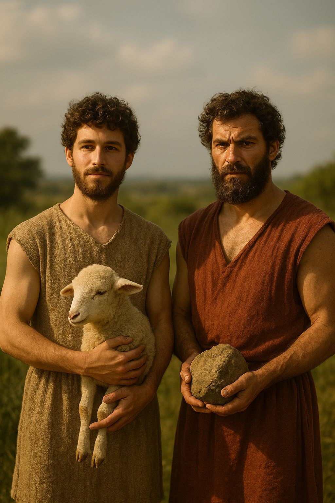
Cain and Abel Grew Up
காயீனும் ஆபேலும் வளர்ந்தனர்
As the years passed, Adam and Eve raised their children and taught them to honor and worship God. From an early age, Cain and Abel learned the value of hard work. When they grew up, each chose a different occupation according to his abilities and interests.
ஆண்டுகள் கடந்தன. ஆதாமும் ஏவாளும் தங்கள் பிள்ளைகளை வளர்த்து, தேவனை மதித்து வாழ கற்றுக்கொடுத்தனர். காயீனும் ஆபேலும் சிறு வயதிலிருந்தே உழைப்பின் மதிப்பை அறிந்து வளர்ந்தனர். அவர்கள் வளர்ந்தபோது, தங்கள் திறமைக்கும் விருப்பத்திற்கும் ஏற்ப வெவ்வேறு தொழில்களைத் தேர்ந்தெடுத்தனர்.
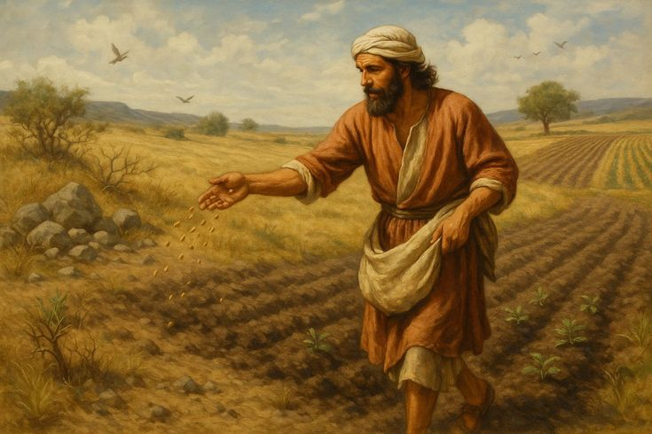
Cain and Abel Grew Up
காயீனும் ஆபேலும் வளர்ந்தனர்
Cain became a farmer who cultivated the land. Each morning, he went out to the fields to plow the soil, sow seeds, water the plants, and remove weeds. Through hard work, he produced grain, vegetables, and many kinds of crops.
காயீன் நிலத்தை உழுது பயிர் விளைவிக்கும் விவசாயியாக ஆனான். காலையில் வயலுக்குச் சென்று நிலத்தை உழுவான், விதைகளை விதைப்பான், செடிகளுக்கு தண்ணீர் பாய்ச்சுவான், களைகளை அகற்றுவான். கடினமாக உழைத்து தானியங்கள், காய்கறிகள் மற்றும் பலவகைப் பயிர்களை விளைவித்தான்.
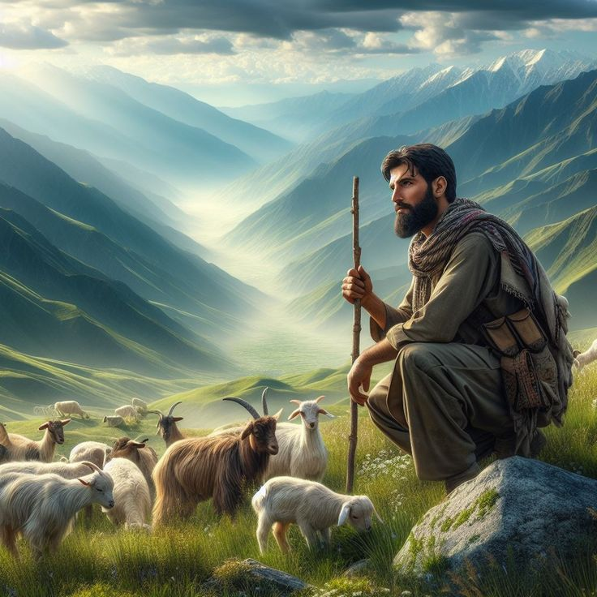
Cain and Abel Grew Up
காயீனும் ஆபேலும் வளர்ந்தனர்
Abel became a shepherd who cared for sheep. Every day, he led his flocks to green pastures to graze. He made sure they had water, protected them from wild animals, and cared for those that became sick. He looked after his flock with great care and love.
ஆபேல் ஆடுகளை மேய்க்கும் மேய்ப்பனாக இருந்தான். தினமும் தன் மந்தைகளைப் பசுமையான புல்வெளிகளுக்கு அழைத்துச் சென்று மேய்ப்பான். அவற்றிற்கு தண்ணீர் கிடைக்கச் செய்வான், காட்டு மிருகங்களிடமிருந்து பாதுகாப்பான், நோய்வாய்ப்பட்ட ஆடுகளைப் பராமரிப்பான். தனது மந்தையின் மீது மிகுந்த அக்கறையுடனும் அன்புடனும் இருந்தான்.
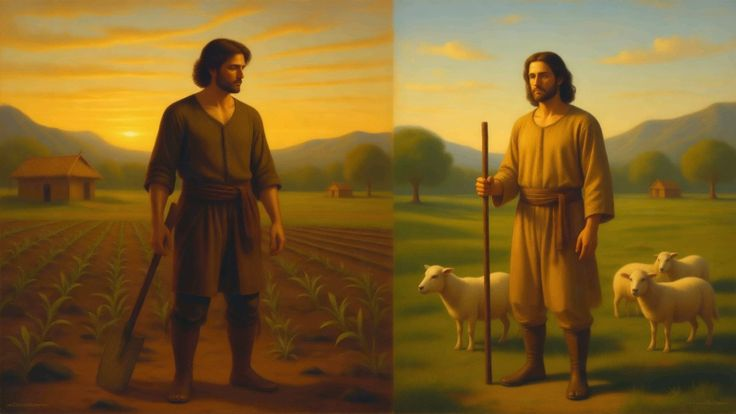
Cain and Abel Grew Up
காயீனும் ஆபேலும் வளர்ந்தனர்
Both brothers were hardworking in their occupations. Through their labor, they provided for the needs of their family. At the same time, they lived with the understanding that God was the source of every blessing. As time passed, both Cain and Abel decided to present offerings to God as an expression of gratitude and honor. They chose to give from the fruits of their labor. This became the beginning of the well-known account of Cain and Abel's offerings.
இரு சகோதரர்களும் தங்கள் தொழிலில் உழைப்பாளிகளாக இருந்தனர். அவர்கள் தங்கள் குடும்பத்திற்குத் தேவையானவற்றை உழைப்பின் மூலம் பெற்றனர். அதே நேரத்தில், தேவனே எல்லா ஆசீர்வாதங்களுக்கும் காரணம் என்பதை அறிந்து வாழ்ந்தனர். காலம் செல்லச் செல்ல, தேவனுக்கு நன்றியையும் மரியாதையையும் செலுத்தும் விதமாக, தாங்கள் உழைத்து பெற்றவற்றில் இருந்து காணிக்கை செலுத்த வேண்டும் என்று இருவரும் முடிவு செய்தனர். இதுவே அடுத்ததாக நடந்த காயீனின் மற்றும் ஆபேலின் காணிக்கை சம்பவத்திற்குத் தொடக்கமாக அமைந்தது.
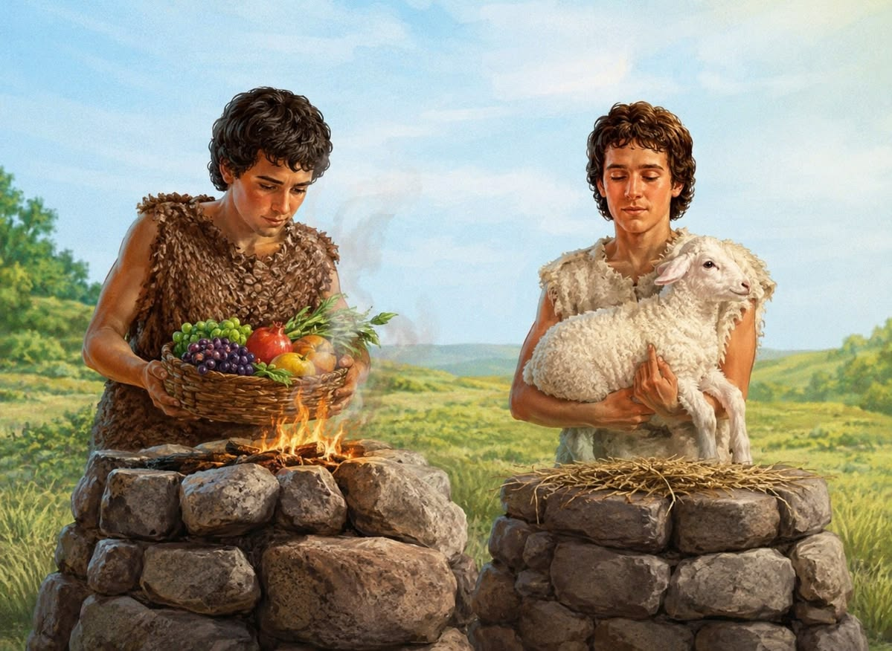
Offering Gifts to God
தேவனுக்குப் பரிசுகளை கொடுத்த இருவர்
One day, both brothers decided to present offerings to the Lord. Cain brought some of the produce from his fields as an offering to God. Abel, however, brought the firstborn of his flock—the best of his lambs—and their fat portions as an offering to the Lord.
ஒருநாள் இருவரும் கர்த்தருக்குக் காணிக்கை செலுத்த முடிவு செய்தனர். காயீன் தன் வயலில் விளைந்த பயிர்களில் சிலவற்றை தேவனுக்குக் காணிக்கையாகக் கொண்டுவந்தான். ஆபேலோ, தன் மந்தையில் பிறந்த முதற்பேறான சிறந்த ஆட்டுக்குட்டிகளையும் அவற்றின் கொழுப்புப் பகுதிகளையும் தேவனுக்குக் காணிக்கையாகச் செலுத்தினான்.
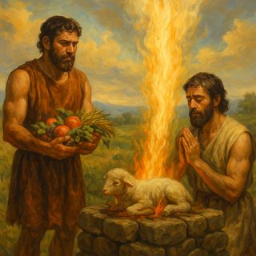
Cain’s Jealousy & God's Warning
பொறாமை எழும் கெயின் & தேவனின் எச்சரிக்கை
The Lord looked with favor on Abel and accepted his offering. But He did not accept Cain and his offering. When Cain saw this, he became very angry, and his face was downcast. Then the Lord said to Cain: "Why are you angry? Why has your face fallen? If you do what is right, will you not be accepted? But if you do not do what is right, sin is crouching at your door. It desires to have you, but you must rule over it." God gave Cain an opportunity to repent. However, Cain did not listen to God's warning.
கர்த்தர் ஆபேலின் காணிக்கையை மகிழ்ச்சியுடன் ஏற்றுக்கொண்டார். ஆனால் காயீனின் காணிக்கையை அவர் ஏற்றுக்கொள்ளவில்லை. இதைக் கண்ட காயீன் மிகவும் கோபமடைந்து முகம் வாடினான். கர்த்தர் காயீனிடம் கூறினார்: "நீ ஏன் கோபப்படுகிறாய்? ஏன் உன் முகம் வாடியிருக்கிறது? நீ நன்மை செய்தால் ஏற்றுக்கொள்ளப்பட மாட்டாயா? ஆனால் நன்மை செய்யாவிட்டால், பாவம் வாசலில் பதுங்கிக் கிடக்கிறது. அது உன்னை ஆள விரும்புகிறது; ஆனால் நீ அதைக் கட்டுப்படுத்த வேண்டும்." தேவன் காயீனுக்கு மனந்திரும்ப வாய்ப்பு கொடுத்தார். ஆனால் காயீன் அந்த அறிவுரையைக் கேட்கவில்லை.
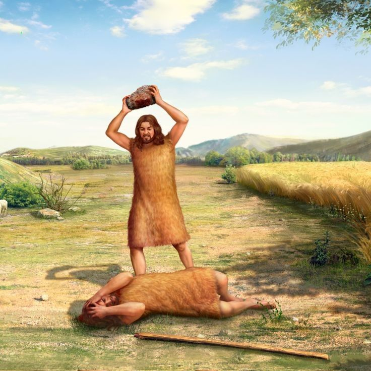
The First Murder
உலகின் முதல் கொலை
Although Cain had heard God's warning, he did not control his anger and jealousy. Instead, his hatred toward Abel continued to grow in his heart. One day, Cain said to his younger brother Abel, "Come, let us go out into the field." While they were together in the field, Cain suddenly attacked Abel and killed him. This was the first murder recorded in the Bible and in human history.
காயீன் தேவனுடைய எச்சரிப்பைக் கேட்டிருந்தாலும், தனது கோபத்தையும் பொறாமையையும் கட்டுப்படுத்தவில்லை. அவன் மனதில் ஆபேல்மீது வெறுப்பு அதிகரித்துக்கொண்டே இருந்தது. ஒருநாள் காயீன் தன் தம்பி ஆபேலிடம், "வா, வயலுக்குப் போவோம்." என்று கூறினான். இருவரும் வயலில் இருந்தபோது, காயீன் திடீரென்று ஆபேலைத் தாக்கிக் கொன்றான். இது மனித வரலாற்றில் வேதாகமம் பதிவு செய்யும் முதல் கொலை ஆகும்.
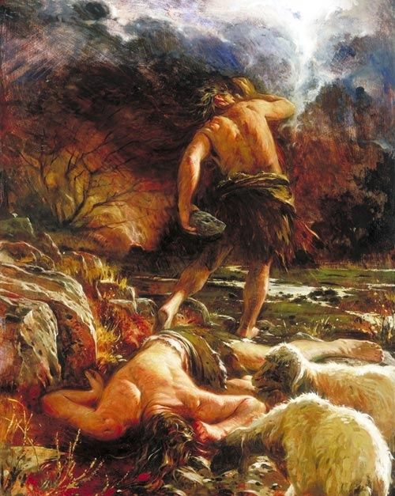
God Questioned Cain
தேவன் காயீனிடம் கேட்டார்
After killing Abel, Cain thought that no one would ever know what he had done. But although something may be hidden from people, nothing can be hidden from the Lord God. Then the Lord came to Cain and asked, "Where is your brother Abel?" God did not ask because He did not know where Abel was. Rather, He asked to give Cain an opportunity to confess his sin and repent. However, Cain did not tell the truth. Instead, he lied and said, "I do not know. Am I my brother's keeper?" This response showed that Cain was trying to hide his crime and refused to take responsibility for what he had done.
ஆபேலைக் கொன்ற பிறகு, காயீன் தான் செய்த குற்றத்தை யாரும் அறிய மாட்டார்கள் என்று நினைத்தான். ஆனால் மனிதர்களிடமிருந்து மறைக்க முடிந்தாலும், கர்த்தராகிய தேவனிடமிருந்து எதையும் மறைக்க முடியாது. அப்போது கர்த்தராகிய தேவன் காயீனிடம் வந்து, "உன் சகோதரன் ஆபேல் எங்கே?" என்று கேட்டார். தேவன் ஆபேல் எங்கே இருக்கிறான் என்று தெரியாமல் கேட்டதல்ல. காயீனுக்கு தனது தவறை ஒப்புக்கொண்டு மனந்திரும்ப ஒரு வாய்ப்பைக் கொடுக்கவே அவர் இவ்வாறு கேட்டார். ஆனால் காயீன் உண்மையைச் சொல்லவில்லை. அவன் பொய் கூறி, "எனக்குத் தெரியாது. நான் என் சகோதரனுக்குக் காவலாளியா?" என்று பதிலளித்தான். இந்தப் பதில், காயீன் தனது குற்றத்தை மறைக்க முயன்றதையும், செய்த செயலுக்குப் பொறுப்பேற்க மறுத்ததையும் காட்டுகிறது.
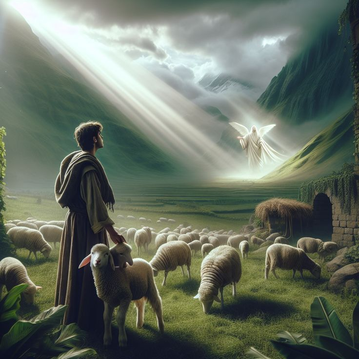
God Punishes Cain
தேவன் கெயினை தண்டித்தார்
Then the Lord said to Cain, "What have you done? Listen! Your brother's blood cries out to Me from the ground." In other words, God knew about Abel's unjust death. He revealed that no act of injustice is hidden from His sight. Then God continued, "Now you are under a curse because of the ground, which has opened its mouth to receive your brother's blood from your hand. When you work the ground, it will no longer yield its crops for you. You will be a restless wanderer on the earth." When Cain heard this, he became very afraid. He said to God, "My punishment is greater than I can bear. Today You are driving me from this land, and I will be hidden from Your presence. I will be a restless wanderer on the earth, and whoever finds me will kill me." But even while pronouncing judgment, the Lord also showed mercy. He placed a mark on Cain so that no one who found him would kill him.
அப்போது கர்த்தராகிய தேவன் அவனிடம் கூறினார்: "நீ என்ன செய்தாய்? உன் சகோதரனின் இரத்தத்தின் சத்தம் பூமியிலிருந்து என்னை நோக்கிக் கதறுகிறது." அதாவது, ஆபேலின் அநியாயமான மரணம் தேவனுக்குத் தெரிந்திருந்தது; எந்த அநீதியும் அவருடைய பார்வையிலிருந்து மறைவதில்லை என்பதை தேவன் வெளிப்படுத்தினார். பின்னர் தேவன் காயீனிடம் தொடர்ந்து கூறினார்: "இனி உன் சகோதரனின் இரத்தத்தை உன் கையிலிருந்து வாங்கிக்கொண்ட இந்த நிலத்தின் காரணமாக, நீ சபிக்கப்பட்டவன். நீ நிலத்தை உழுதாலும் அது இனி உனக்குத் தனது பலனைக் கொடுக்காது. நீ பூமியில் அலைந்து திரியும் அகதியாக இருப்பாய்." இதைக் கேட்ட காயீன் மிகவும் பயந்தான். அவன் தேவனிடம், "என் தண்டனை தாங்க முடியாத அளவுக்கு பெரியது. இன்று நீர் என்னை இந்த நிலத்திலிருந்து துரத்துகிறீர். உம்முடைய சந்நிதியிலிருந்து நான் மறைந்து, பூமியில் அலைந்து திரியும் அகதியாக இருப்பேன். யார் என்னைக் கண்டாலும் என்னைக் கொன்றுவிடுவார்கள்." என்று கூறினான்.
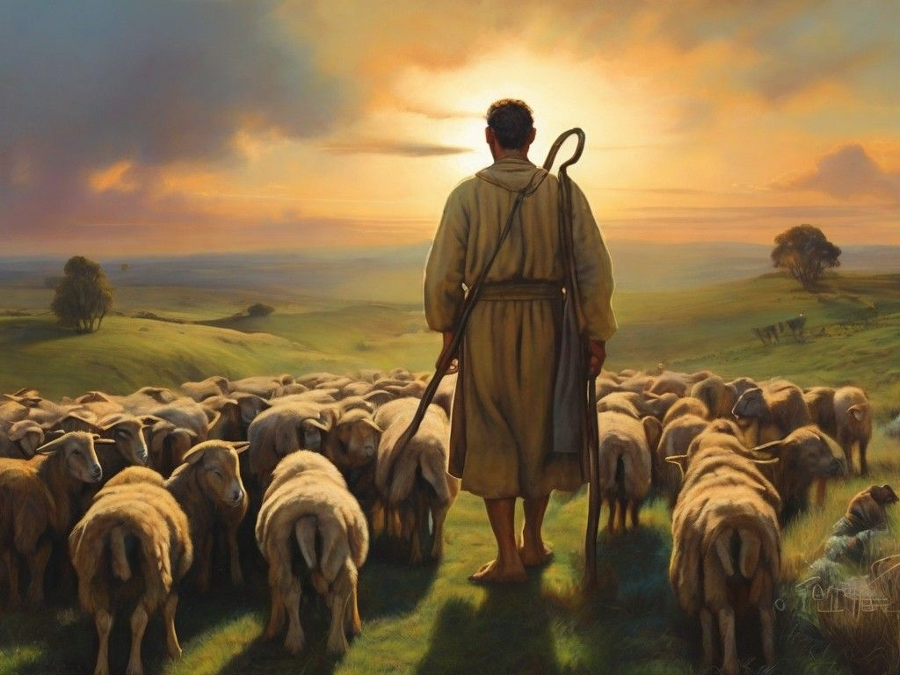
Cain’s New Life
கெயின் புதிய வாழ்க்கை
However, even while pronouncing judgment, the Lord God also showed mercy. He placed a mark on Cain so that no one who found him would kill him. After that, Cain went away from the presence of the Lord and settled in the Land of Nod. Cain became the first murderer in human history. Yet, because of God's mark, although he lived under judgment and without God's favor, his life was preserved and he continued to live.
ஆனால் கர்த்தராகிய தேவன், தண்டனை அளித்தபோதும் இரக்கத்தையும் காட்டினார். காயீனை யாரும் கொல்லாதபடி அவன்மேல் ஒரு அடையாளத்தை வைத்தார். பின்னர் காயீன் கர்த்தருடைய சந்நிதியை விட்டு வெளியேறி, Land of Nod என்ற தேசத்தில் குடியேறினான். உலகில் முதல் கொலை செய்பவர் ஆனார், ஆனால் தேவனின் குறி மூலம் பாதுகாப்பற்றவராக இருந்தாலும், உயிருடன் வாழ்ந்தான்.
Jealousy and anger are like small sparks that can burn great blessings. When we let them grow in our hearts, they blind us to love and truth. That’s what happened to Cain when he became jealous of his brother Abel. Instead of turning to God, he turned against his own brother — and peace was lost. This was not just a warning for Cain — it’s a message for us all. Every heart faces moments of anger, pride, or jealousy. But God’s Spirit whispers within us:
“Choose love. Choose forgiveness. Choose peace.”